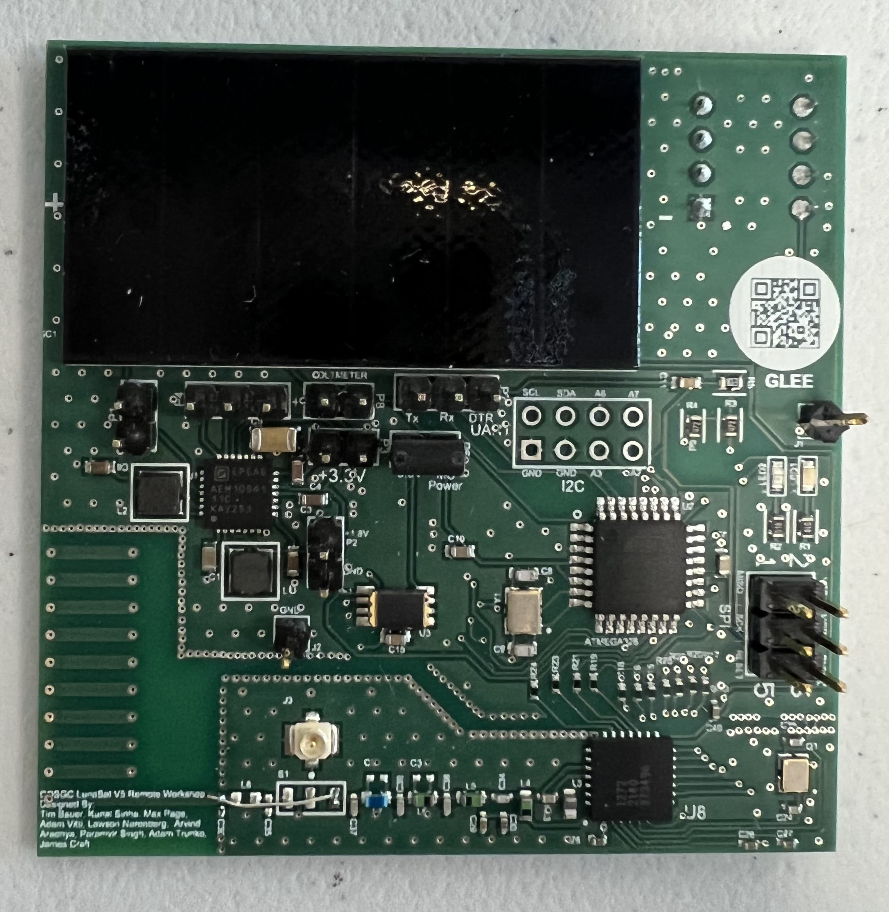
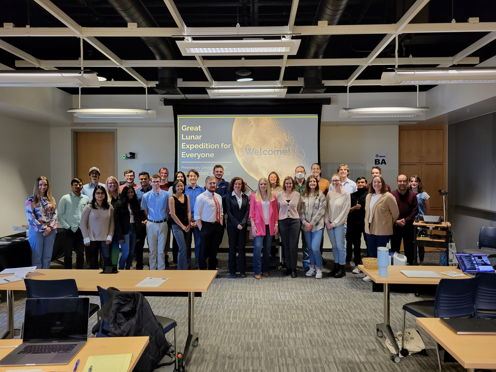

GLEE is a mission to land hundreds of LunaSats (small spacecraft about the size of a Post-it note) on the Moon to conduct citizen science missions. GLEE is led by NASA’s Colorado Space Grant Consortium at the University of Colorado, Boulder, and is currently supported by NASA’s Artemis Student Challenges.
GLEE’s goal is to engage students around the world by giving them the opportunity to work with hardware and code developing skills and a possible science mission. We are working towards securing a ride to the Moon. Our workshop teams will know as soon as our flight is confirmed.
I was hired to GLEE in September of 2020 and have played a huge role in the creation and execution of the GLEE Remote Workshop. As the Communications and Public Outreach Team Lead, my role included creating the 10 hands-on learning modules that teams use to learn about the LunaSat.
The LunaSat has 5 scientific sensors along with a radio frequency and power management system. During the workshop teams get to learn about these different sensors so at the end they can create their own mission case. Our hope is to one day send up over 200 LunaSats and collect distributive science on the lunar surface.
Once the educational content was created I worked on outreach to get our student teams from across the world. This included creating the entire application process and selecting our student teams. As of now we have 1,234 students. We have also re-opened applications for teams in the Artemis Accords countries. I am currently working with all of our teams to help support them through the workshop.
As the workshop is underway, our team is currently transitioning our focus. My subteam is now working on contacting lander companies to secure a ride to the moon. Our Housing and Deployment Module team has been working hard to create a structure that can distribute the LunaSats on the surface of the moon.
